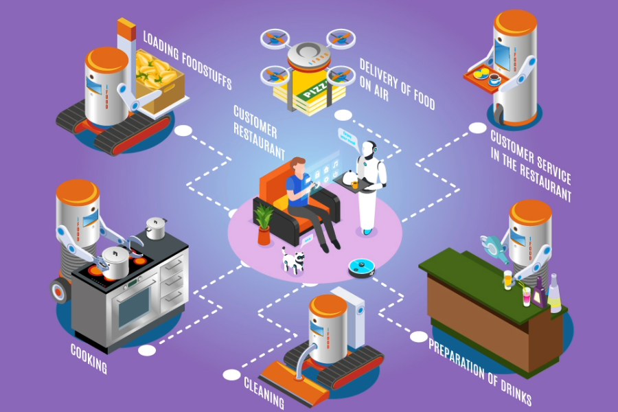
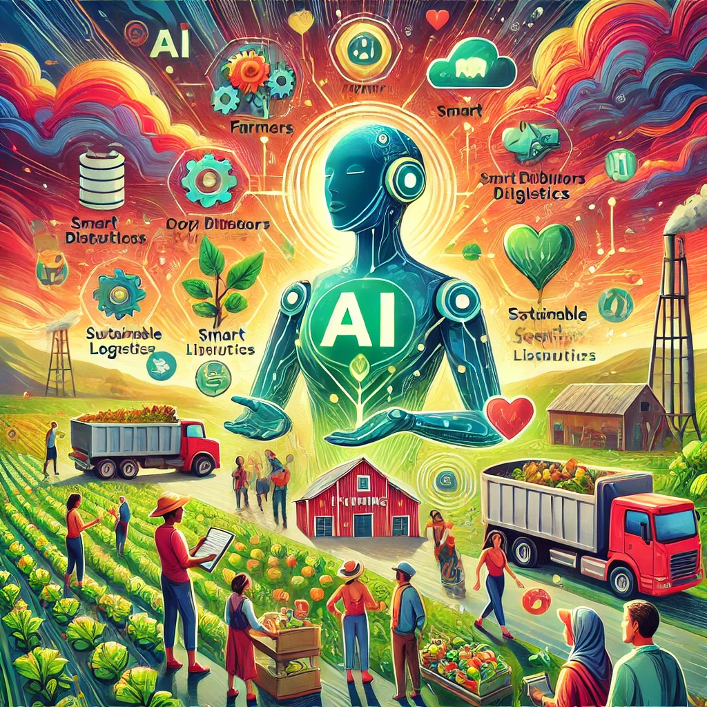
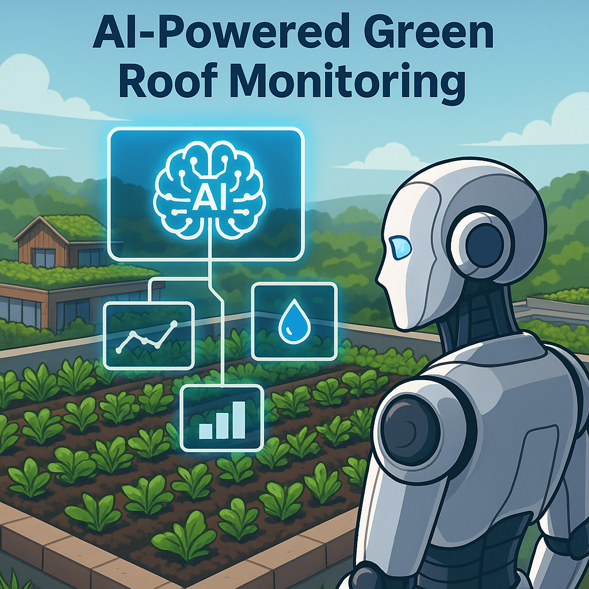

How AI5R0Hunger Works

Step 1: AI-Powered Food Distribution
AI detects surplus food and directs it to hunger-prone areas using optimized logistics, reducing waste and ensuring equitable access.

Step 2: Smart Agriculture & Green Roofs
AI enhances urban farming through Green Roofs, hydroponics, and precision agriculture, maximizing food production in limited spaces.
Step 3: Real-Time Monitoring & Data Analytics
AI tracks food supply, predicts shortages, and provides data-driven solutions to ensure efficient food management and waste reduction.

Step 4: AI Assistance for Communities
Our AI assistant offers real-time guidance on farming techniques, food storage, and smart distribution, empowering individuals to contribute to sustainability.

Step 5: AI-Powered Green Roof Monitoring
AI constantly tracks plant health, weather conditions, and soil moisture. If strong winds or heavy rain are detected, the AI sends alerts so our workers can take action immediately.
Join the AI5R0Hunger Movement!
Be part of this tech-driven revolution and help create a hunger-free world!
Get Involved